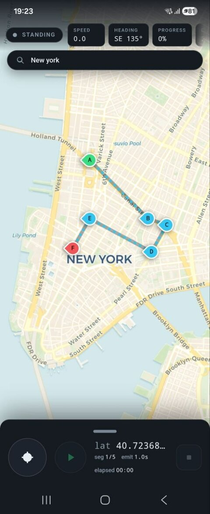
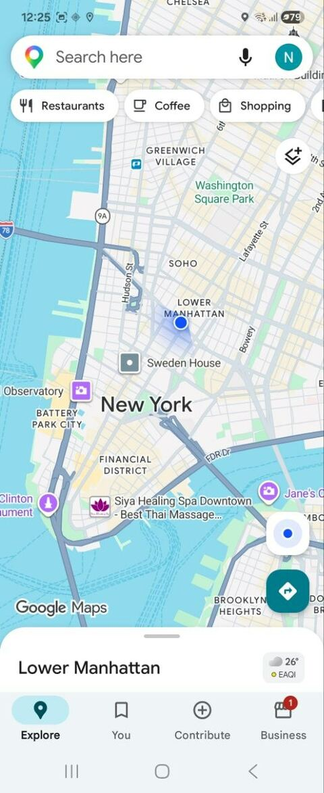
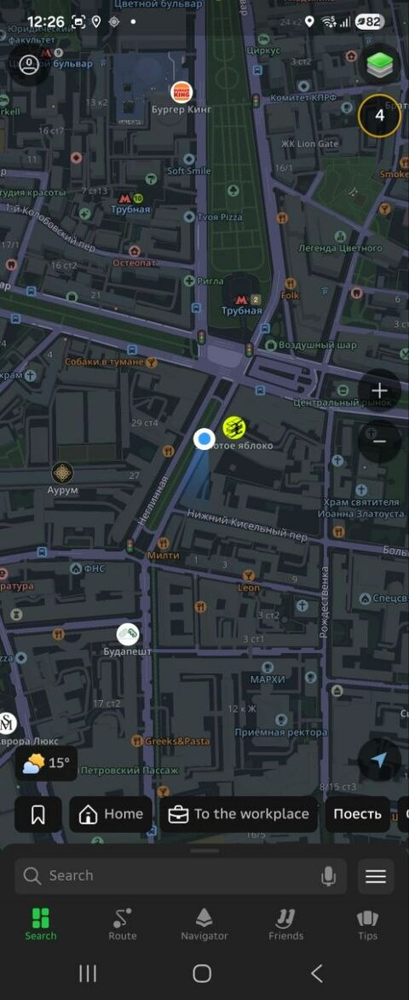
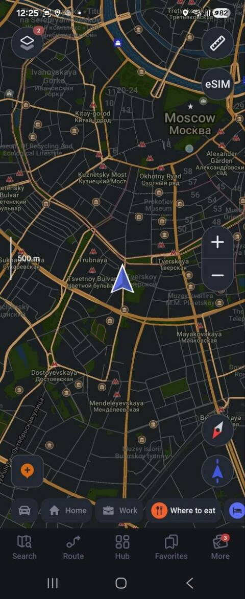
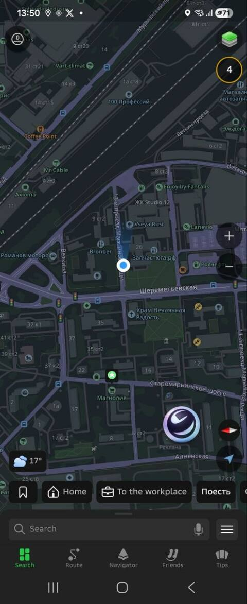
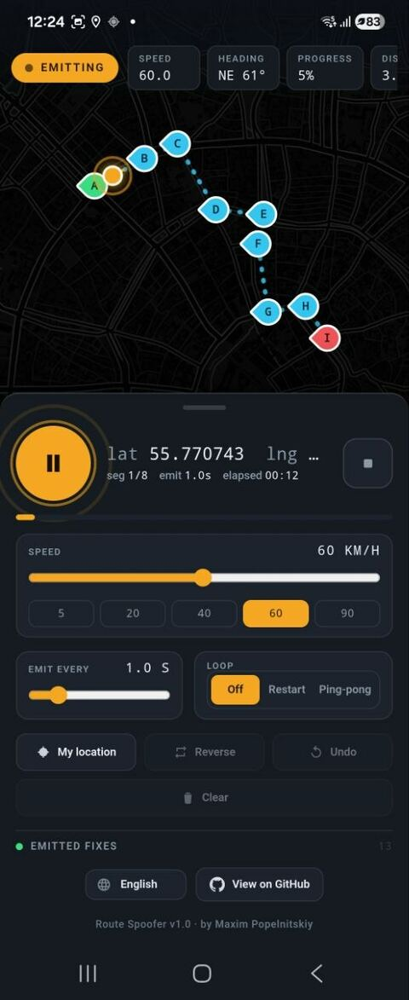
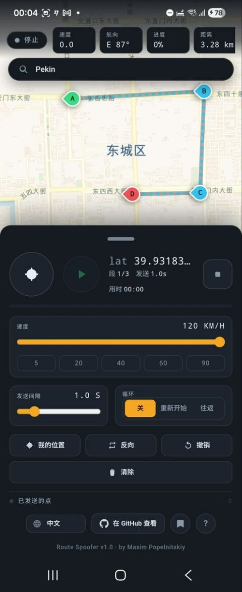
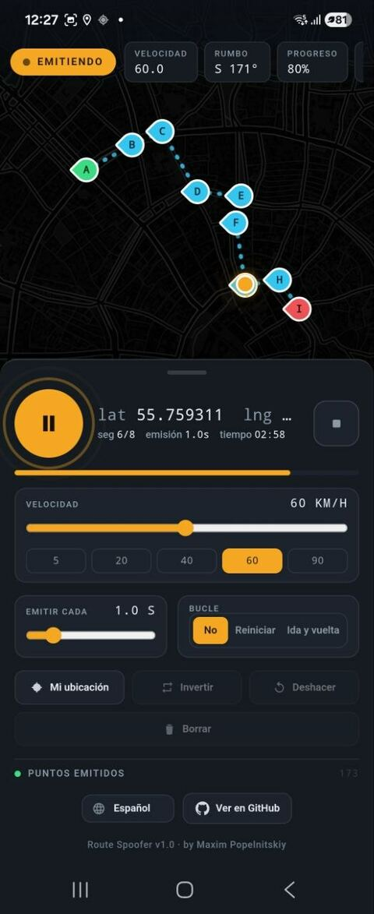
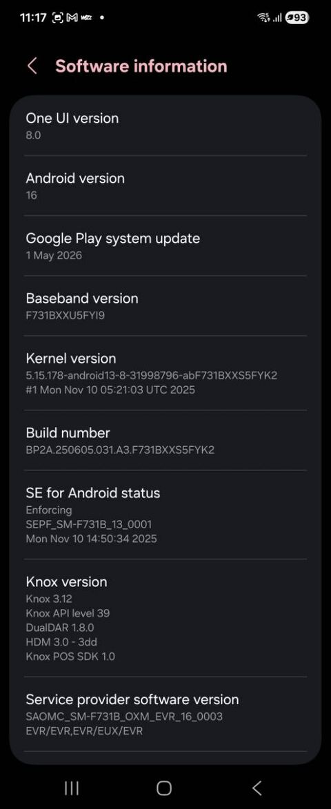
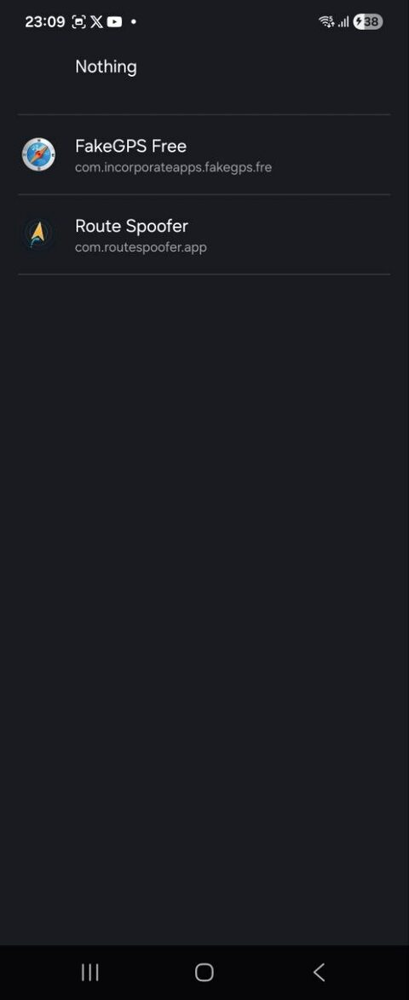

Test without moving
Exercise a driver, navigation, delivery or dispatch app from your desk instead of walking or driving a real route.
Android mock-GPS route player — drive a scripted route at a set speed to test location-based apps.

Route Spoofer is a standalone Android app that injects a scripted, moving GPS location into your whole device. You draw a route, set a speed and press Play — and every other app on the phone reads the simulated position as if you were really there. No root, no separate desktop tool: it runs entirely on the phone.
Built for QA engineers and developers who work on location-based apps — driver, navigation, delivery and dispatch products.
Exercise a driver, navigation, delivery or dispatch app from your desk instead of walking or driving a real route.
Replay the exact same route at the exact same speed on every run — ideal for regression tests and bug reproduction.
Show a ride-hailing or dispatch platform with a realistic moving trip, without sending anyone outside.
Because the location is injected at the system level, the fake position appears everywhere — not just inside Route Spoofer. Open Google Maps, Yandex Maps, Maps.me or any navigator and watch the marker follow your scripted route.




Tap A → B → C … to draw a route; Route Spoofer interpolates a smooth path between the points.
Set the playback speed in km/h and how often a location fix is emitted.
Start, pause and stop the run at any moment.
Choose loop off, restart from the start, or ping-pong back and forth along the route.
A HUD shows speed, heading, progress and distance, with a running log of emitted fixes.
Your route is stored on the device — reopen the app and replay it.
A native foreground service keeps emitting the location even while the app is in the background.

The app interface itself is translated into several languages and switches on the fly — handy when you test the same flow across locales.


A Capacitor 7 web UI built with HTML and JavaScript handles route drawing and preview. A native Kotlin foreground service injects the position into Android's GPS and NETWORK test providers, so the fix reaches the whole system. Route Spoofer must be selected as the system mock-location app. The project is built with the JDK 21 toolchain.
A one-time phone setup, then press Play. The two screenshots below show the developer-mode steps.
Open Settings → About phone → Software information and tap Build number seven times to unlock Developer options.
Allow installs from unknown sources and sideload the app-debug.apk file onto the phone.
In Developer options open “Select mock location app” and choose Route Spoofer.
Open Route Spoofer, grant Location and Notifications, wait for the readiness card, then press Play.


GitHub Actions builds the app — download the app-debug.apk artifact from the workflow run.
Or build it yourself in Android Studio with JDK 21 and the Android SDK.
Android only. iOS has no public mock-location API, so it cannot be supported.
Released under the MIT License — © 2026 Maxim Popelnitskiy. Free to use, modify and distribute.
MIT License · © 2026 Maxim Popelnitskiy